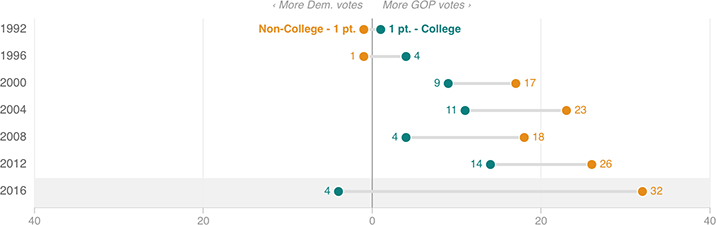

The White College/Non-College Divide Could Be Gargantuan This Year
The latest polling data shows that whites with a college degree appear to be closely divided (and potentially favoring Clinton slightly). Meanwhile, whites without a college degree heavily support Donald Trump. This could make for by far the biggest divide between whites with and without a college degree in at least six elections.
